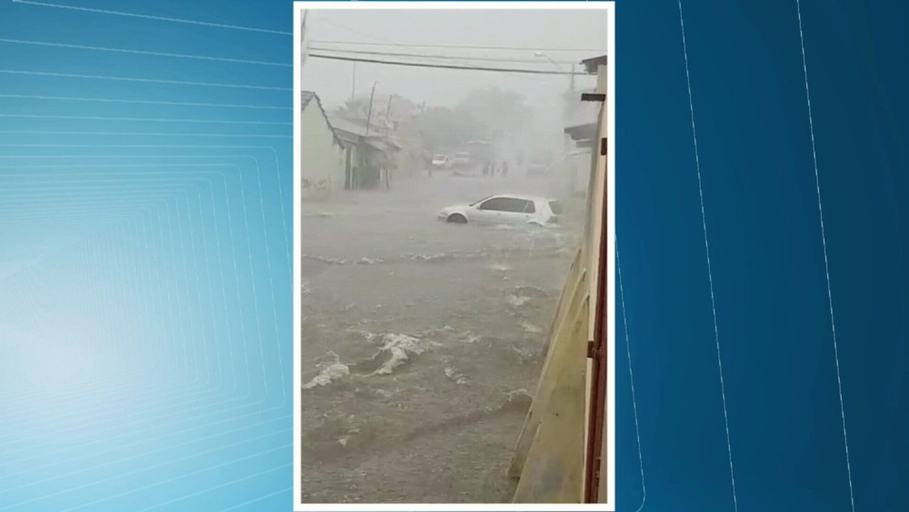
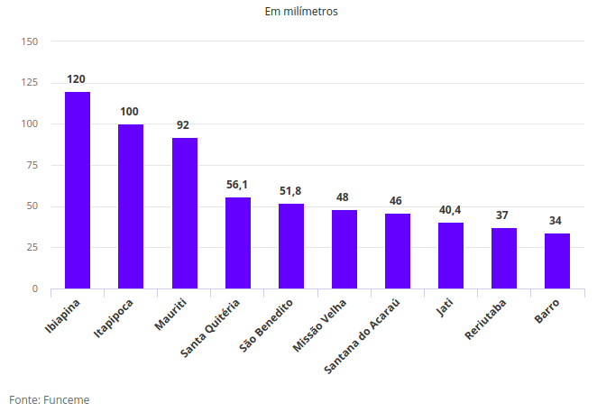

Duas cidades do Ceará registraram chuva de 100 milímetros entre as 7 horas de sexta-feira, (13), e o mesmo horário deste sábado, 14, de acordo com dados parciais da Fundação Cearense de Meteorologia e Recursos Hídricos (Funceme). Choveu em pelo menos 77 cidades.
Destaque para Ibiapina, Região da Ibiapaba com 120,0 milímetros. Em seguida Itapipoca, Litoral Oeste do Estado com 100,0 milímetros.
Mauriti na Região do Cariri e Santa Quitéria, Região Central, vêm logo atrás com 92 milímetros e 56,1 milímetros.
Em Mauriti uma casa desabou e uma família ficou desabrigada. As ruas ficaram cobertas pela água que descia com força. Os poucos motoristas que arriscaram sair pela cidade, rodavam com água cobrindo os pneus. Em outra rua um morador se arriscava tomando banho, correndo perigo de ser levado pela correnteza.

Previsão para o sábado:
Previsão para domingo:
Previsão para segunda-feira:

Treze dias de abril choveu mais que todo o mês de março
Em 13 dias deste mês de abril as chuvas no Ceará já superaram o volume de todo o mês de março, segundo a Fundação Cearense de Meteorologia e Recursos Hídricos (Funceme). Foram 139.5 e 119.7 milímetros, respectivamente.
A média histórica do mês de abril é de 188 mm. Para o mês de maio – último da chamada quadra chuvosa que começa em fevereiro – é esperado volume de pelo menos 90 milímetros.
Março é, historicamente, o mês onde ocorrem mais precipitações durante a quadra chuvosa. No mês, a média histórica é de 203.4 milímetros mas, em 2018, foi registrada uma queda de 41,1% no volume de chuvas. Já em fevereiro, ocorreu o contrário: enquanto a média histórica é de 135.6 milímetros, choveu em todo o mês 185.2 milímetros, volume 56,1% acima da média.
De acordo com prognóstico divulgado pela Funceme em 22 de fevereiro, o Ceará tem 45% de chances de ter chuva acima do normal nos próximos meses de março, abril e maio. Conforme os dados apresentados, há 35% de chances de chuva em torno do normal e 20% para chuvas abaixo do normal.